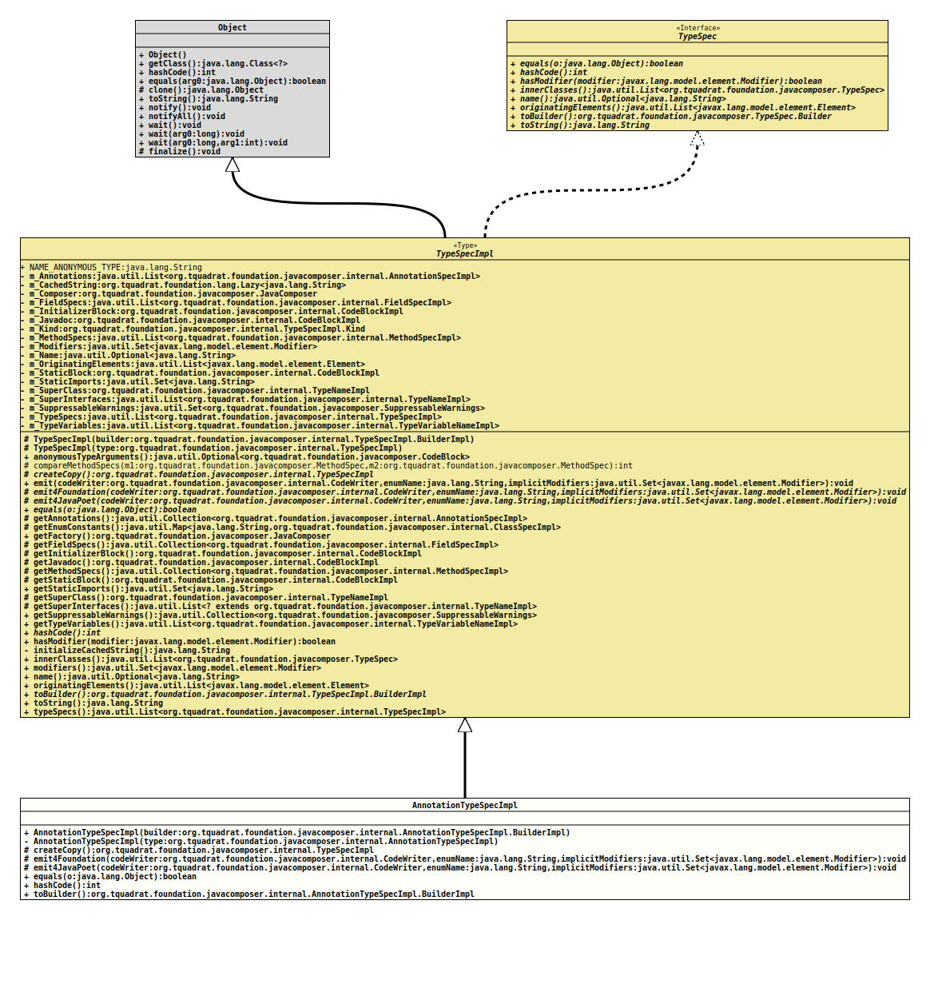

Class AnnotationTypeSpecImpl
java.lang.Object
org.tquadrat.foundation.javacomposer.internal.TypeSpecImpl
org.tquadrat.foundation.javacomposer.internal.AnnotationTypeSpecImpl
- All Implemented Interfaces:
TypeSpec
@ClassVersion(sourceVersion="$Id: AnnotationTypeSpecImpl.java 936 2021-12-13 16:08:37Z tquadrat $")
@API(status=INTERNAL,
since="0.2.0")
public final class AnnotationTypeSpecImpl
extends TypeSpecImpl
The implementation of
TypeSpec
for annotations.- Author:
- Square,Inc.
- Modified by:
- Thomas Thrien (thomas.thrien@tquadrat.org)
- Version:
- $Id: AnnotationTypeSpecImpl.java 936 2021-12-13 16:08:37Z tquadrat $
- Since:
- 0.2.0
- UML Diagram
-

UML Diagram for "org.tquadrat.foundation.javacomposer.internal.AnnotationTypeSpecImpl"
{kind=link}
-
Nested Class Summary
Nested ClassesModifier and TypeClassDescriptionstatic final classThe implementation ofTypeSpec.Builderfor annotation types.Nested classes/interfaces inherited from class org.tquadrat.foundation.javacomposer.internal.TypeSpecImpl
TypeSpecImpl.KindNested classes/interfaces inherited from interface org.tquadrat.foundation.javacomposer.TypeSpec
TypeSpec.Builder -
Field Summary
Fields inherited from class org.tquadrat.foundation.javacomposer.internal.TypeSpecImpl
NAME_ANONYMOUS_TYPE -
Constructor Summary
ConstructorsModifierConstructorDescriptionprivateCreates a dummy type spec for type-resolution in CodeWriter only while emitting the type declaration but before entering the type body.Creates a newTypeSpecImplinstance. -
Method Summary
Modifier and TypeMethodDescriptionprotected final TypeSpecImplCreates a dummy copy of the type spec that is used byTypeSpecImpl.emit(CodeWriter, String, Set)internally.protected final voidemit4Foundation(CodeWriter codeWriter, String enumName, Set<Modifier> implicitModifiers) Emits the type to the given code writer, using the layout as defined by the Foundation library code.protected final voidemit4JavaPoet(CodeWriter codeWriter, String enumName, Set<Modifier> implicitModifiers) Emits the type to the given code writer, using the layout as defined by the original JavaPoet code.final booleanfinal inthashCode()Returns a new builder that is initialised with thisTypeSpecinstance.Methods inherited from class org.tquadrat.foundation.javacomposer.internal.TypeSpecImpl
annotationBuilder, annotationBuilder, anonymousClassBuilder, anonymousClassBuilder, anonymousTypeArguments, classBuilder, classBuilder, compareMethodSpecs, emit, enumBuilder, enumBuilder, getAnnotations, getEnumConstants, getFactory, getFieldSpecs, getInitializerBlock, getJavadoc, getMethodSpecs, getStaticBlock, getStaticImports, getSuperClass, getSuperInterfaces, getSuppressableWarnings, getTypeVariables, hasModifier, innerClasses, interfaceBuilder, interfaceBuilder, modifiers, name, originatingElements, toString, typeSpecs
-
Constructor Details
-
AnnotationTypeSpecImpl
Creates a newTypeSpecImplinstance.- Parameters:
builder- The builder for this instance.
-
AnnotationTypeSpecImpl
Creates a dummy type spec for type-resolution in CodeWriter only while emitting the type declaration but before entering the type body.- Parameters:
type- The source type.
-
-
Method Details
-
createCopy
Creates a dummy copy of the type spec that is used byTypeSpecImpl.emit(CodeWriter, String, Set)internally.- Specified by:
createCopyin classTypeSpecImpl- Returns:
- The dummy copy.
-
emit4Foundation
protected final void emit4Foundation(CodeWriter codeWriter, String enumName, Set<Modifier> implicitModifiers) throws UncheckedIOException Emits the type to the given code writer, using the layout as defined by the Foundation library code.- Specified by:
emit4Foundationin classTypeSpecImpl- Parameters:
codeWriter- The target code writer.enumName- The name of the enum; can benull.implicitModifiers- The implicit modifiers.- Throws:
UncheckedIOException- A problem occurred when writing to the output target.
-
emit4JavaPoet
protected final void emit4JavaPoet(CodeWriter codeWriter, String enumName, Set<Modifier> implicitModifiers) throws UncheckedIOException Emits the type to the given code writer, using the layout as defined by the original JavaPoet code.- Specified by:
emit4JavaPoetin classTypeSpecImpl- Parameters:
codeWriter- The target code writer.enumName- The name of the enum; can benull.implicitModifiers- The implicit modifiers.- Throws:
UncheckedIOException- A problem occurred when writing to the output target.
-
equals
- Specified by:
equalsin interfaceTypeSpec- Specified by:
equalsin classTypeSpecImpl
-
hashCode
- Specified by:
hashCodein interfaceTypeSpec- Specified by:
hashCodein classTypeSpecImpl
-
toBuilder
Returns a new builder that is initialised with thisTypeSpecinstance.- Specified by:
toBuilderin interfaceTypeSpec- Specified by:
toBuilderin classTypeSpecImpl- Returns:
- The new builder.
-